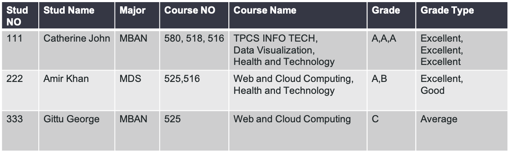
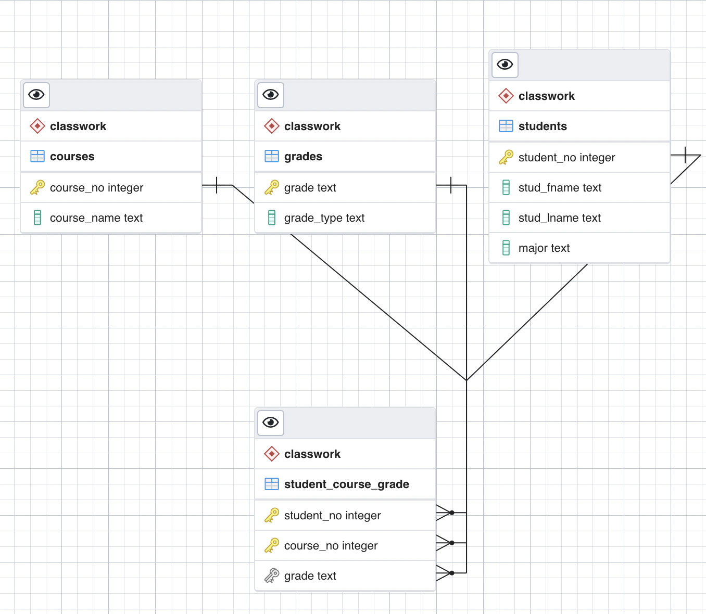

4. Lecture 3: Data Modeling for Business Applications¶
Gittu George, January 11 2022
4.1. Todays Agenda¶
Data normalization
Refresher to Database concepts
Group Presentation
4.2. Learning objectives¶
WHAT & WHY databases? (ACID properties)
WHY breaking the table is essential?
Have an understanding of various normal forms in a database.
4.3. Introducing to some problems¶
We will start with a CSV file or an excel spreadsheet. This is the most common way of storing data in various organizations. Often people organize it messy. Checkout this CSV file
{kind=link}
This looks okay now as it’s just 3 rows, but think about how it will look if we are going to store entire students in a university. Here what are the problems that come to your mind? Here are a few of them
Does the order of courses in a course column matter?
E.g., For Amir Khan, the order for course number is 525,516. Does this mean that the order in which he took classes? How many courses are a student supposed to take? We see Catherine, Amir, Gittu taking 3, 2, and 1 class, respectively. Is there a minimum number of courses that a student needs to take? Is there any maximum limit?
Too many duplicates ?
What happens if I am loading incoming students to the database ?
They won’t be taking any classes until they start, which can result in lots of null values.
Human errors can happen.
Assume what happens if I accidentally entered 525a as the course number?
Deletion anomaly
Deleting a student can end up deleting course information. E.g., deleting Catherine can take out the course information for course numbers 580, 518.
Update anomaly
We plan to change the course name for 525 from “Web and cloud computing” to “Cloud computing for Big Data”! How many places need to be updated?
Insertion anomaly
We plan to launch a new course named 999 named “Big Data Systems,” and no students are currently enrolled in it. So how are we going to store this information?
Loading this data into a database table can bring in problems mentioned above, resulting in serious data integrity issues, and hence we should do data normalization.
4.4. Normalization¶
Normalization is the process of minimizing redundancy from a table of relations. These redundancies in relation may cause insertion, deletion, and update anomalies. Normal forms are a certain set of defined rules to “break a table smartly” to create normalized tables.
Storytime:
Ted Codd introduced the concept of normalization and first normal form in his paper in 1970, which provides theoretical foundation of designing a database. After a year, he defined 2nd and 3rd normal form in this paper. Later in 1974, Codd and Raymond F. Boyce defined the Boyce–Codd normal form (BCNF). These 4 normal forms are considered the most common or important ones; Most database systems are designed to follow the 3rd normal form or BCNF.
Later came some more restrictive normal forms (4NF,5NF,6NF), but these are mainly used for theoretical purposes and are less implemented in industries.
Note: We explain the normal forms in an easier-to-understand fashion, and they can also be explained using theoretical formulas and derivations.
4.4.1. First normal form (1NF)¶
To be in 1NF,
All types must be atomic.❌
No repeating groups ✅
All types must be atomic.✅
No repeating groups ❌
{kind=link}
All types must be atomic. ✅
No repeating groups✅
{kind=link}
4.4.2. Second normal form (2NF)¶
To be in 2NF
Must be in first normal form ✅
Any non-key attributes fully depend on the candidate key ❌
{kind=link}
Must be in first normal form ✅
Any non-key attributes fully depend on the candidate key ✅
{kind=link}
4.4.3. Third normal form¶
To be in 3NF
Must be in second normal form ✅
There should be no transitive dependency ❌
{kind=link}
Must be in second normal form ✅
There should be no transitive dependency ✅
{kind=link}
Now we have finished normalizing the table, let’s create this table’s in our database.
import psycopg2
# Create a connection
conString = {'host':'mbandtweet.xxxx.rds.amazonaws.com',
'dbname':'postgres',
'user':'postgres',
'password':'xxxx',
'port':5432}
conn = psycopg2.connect(**conString)
# Create a cursor
cur = conn.cursor()
createTables = """
CREATE TABLE IF NOT EXISTS classwork.students(student_no integer PRIMARY KEY, stud_fname text,
stud_lname text, major text);
CREATE TABLE IF NOT EXISTS classwork.courses(course_no integer PRIMARY KEY, course_name text);
CREATE TABLE IF NOT EXISTS classwork.grades( grade text PRIMARY KEY, grade_type text);
CREATE TABLE IF NOT EXISTS classwork.student_course_grade(
student_no integer REFERENCES classwork.students(student_no),
course_no integer REFERENCES classwork.courses(course_no),
grade text REFERENCES classwork.grades(grade),
PRIMARY KEY(student_no, course_no));"""
cur.execute(createTables)
conn.commit()
insertinto = """
INSERT INTO classwork.students VALUES (111,'Catherine','John','MBAN');
INSERT INTO classwork.students VALUES (222,'Amir','Khan','MDS');
INSERT INTO classwork.students VALUES (333,'Gittu','George','MBAN');
INSERT INTO classwork.courses VALUES (580,'TPCS INFO TECH');
INSERT INTO classwork.courses VALUES (518,'Data Visualization');
INSERT INTO classwork.courses VALUES (516,'Health and Technology');
INSERT INTO classwork.courses VALUES (525,'Web and Cloud Computing');
INSERT INTO classwork.grades VALUES ('A','Excellent');
INSERT INTO classwork.grades VALUES ('B','Good');
INSERT INTO classwork.grades VALUES ('C','Average');
INSERT INTO classwork.student_course_grade VALUES(111,580,'A');
INSERT INTO classwork.student_course_grade VALUES(111,518,'A');
INSERT INTO classwork.student_course_grade VALUES(111,516,'A');
INSERT INTO classwork.student_course_grade VALUES(222,525,'A');
INSERT INTO classwork.student_course_grade VALUES(222,516,'B');
INSERT INTO classwork.student_course_grade VALUES(333,525,'C');
"""
cur.execute(insertinto)
conn.commit()
Demo exploring it from pgadmin vizualizer.
{kind=link}
Revisit the problems listed at the beginning to see if we have resolved those by performing this normalization.
Entity Relation Models are about Entities. So we can put these tables together using the primary keys and foreign keys in getting what we want.
query = """SELECT stu.stud_fname, stu.stud_lname,g.grade,c.course_name FROM schema.students AS stu
INNER JOIN schema.student_course_grade AS g ON g.student_no = stu.student_no
INNER JOIN schema.courses AS c ON c.course_no = g.course_no
WHERE g.grade='A' AND c.course_name='Health and Technology';
"""
cur.execute(insertinto)
row = cur.fetchone()
print(row)
4.5. Key Properties of a DBMS¶
Often we refer to ACID or ACID Compliant databases. With modern No-SQL databases, we also hear about BASE databases. However, ACID was one of the fundamental properties of most early databases and is the reason for their broad adoption. It is an acronym that means:
Atomic
The unit of operation within an ACID database is the transaction. A transaction may involve one command or multiple commands. When multiple commands modify data, if one of them fails, the transaction is not committed (i.e., none of the operations are performed).
E.g., We have a database with one table (Values) and two columns (a and b). We have an operation where, on a particular row, a value is subtracted from a and added to b. This might be similar to a banking transaction, where I withdraw money from my account to pay for a new pair of slippers. The operation takes place in two steps:
Remove value from a
Place value in b
Atomicity ensures that if a system failure occurs between steps one and two, or if either step one or step two is invalid for any other reason, the entire transaction will not be processed.
Consistent
All data within the database follow the defined rules for the database, the defined rules for anyone table, and the defined rules for any one field. All operations on the database will return the same value, given the same set of underlying data each time.
E.g., We have table marks that give the breakdown of marking schemes for various courses. It is divided into quiz, participation, midterm, and final columns. All fields must be integers, and because these values make up the course marking scheme, each row must sum to 100. We can add a constraint to the table that ensures this using the CHECK operator.
A database that ensures consistency would reject any transaction where the final result results in a marking sum <> 100.
Isolation
Any transaction occurs in isolation. One transaction cannot affect another transaction. When a transaction acts on the data, the tables or rows on which it acts are effectively locked to other transactions.
If two transactions modify the same table, the sequence of operations will ensure that the first transaction completes before the second transaction can change the data.
E.g., In that same marks table as before, let’s assume that a department has decided that all final exam scores will be reduced by 5% and that that value will be shifted to participation. At the same time, an individual instructor in the program has decided to increase the final weighting and reduce the midterm weighting.
If these operations are not isolated, the program-level transaction may reduce the weighting of the final exam. The instructor-level transaction
Durability
The results of any transaction that completes successfully are permanently stored within the database.
E.g., Data that goes in following a completed transaction doesn’t come out unless another transaction operates to remove the data.